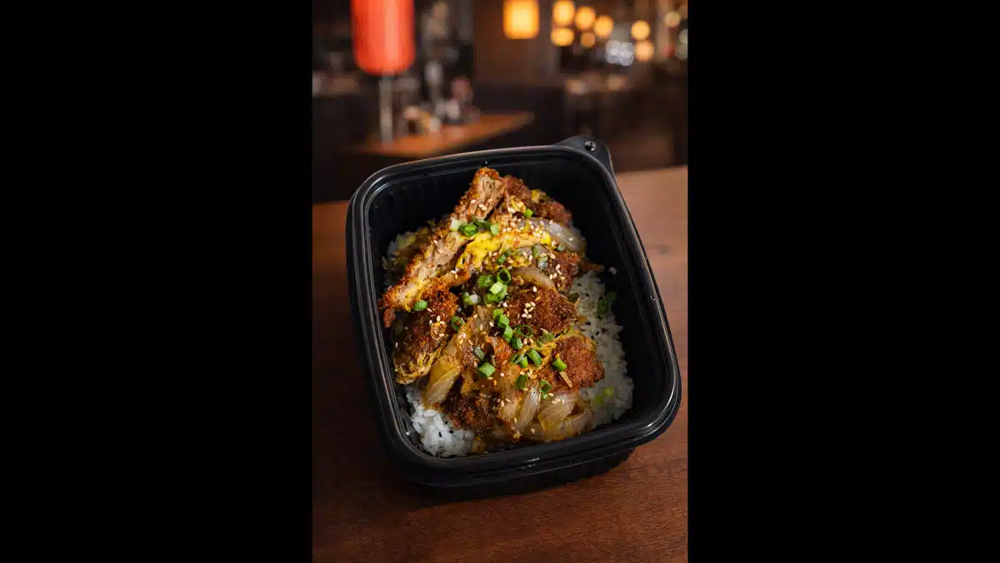
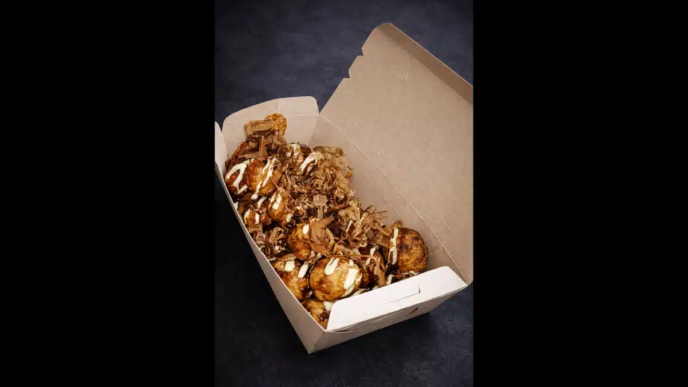
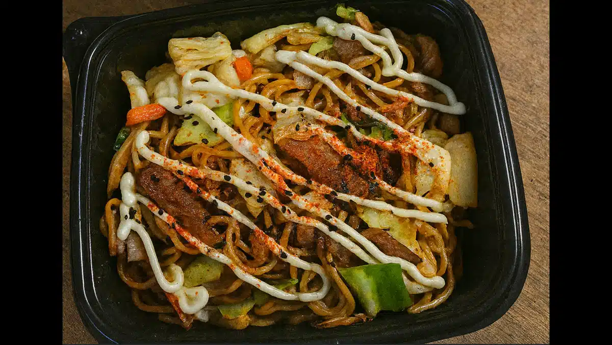
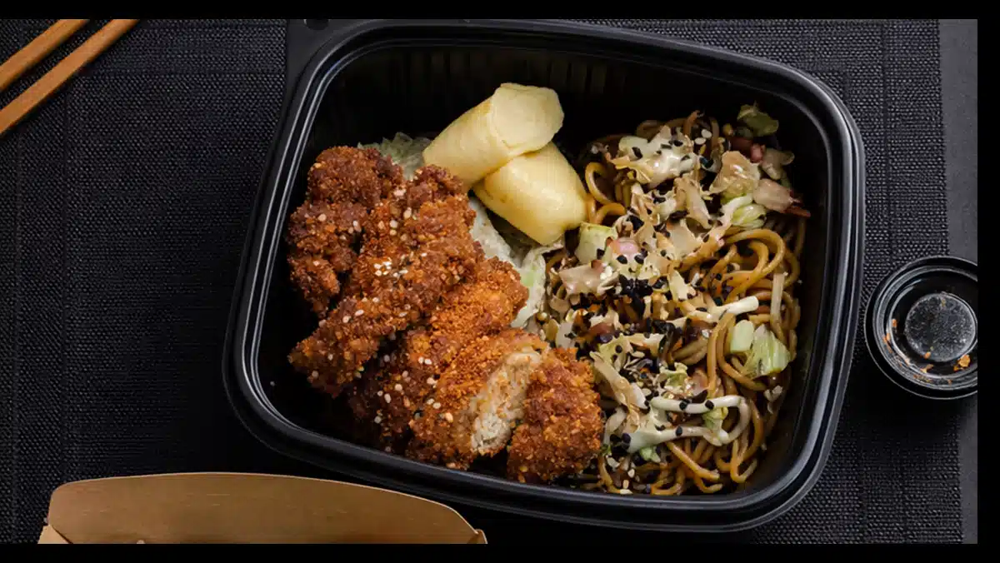

Historia inmigrantes japoneses comida japonesa trujillo.
ペルーの歴史の教科書には載っていない日付があります。試験にも出ず、広場の壁画にも描かれず、祝日でもありません。しかし、その日がなければ、今日のペルーの美食は存在しなかったでしょう。
1899年4月3日。
その日、蒸気船「佐倉丸」が790人の日本人労働者を乗せてカヤオ (Callao) 港に入港しました。彼らは沖縄、広島、熊本からやってきました。ペルー北部、ラ・リベルタ (La Libertad)
州のサトウキビ農園での4年間の労働契約を手に。荷物はわずかでした。しかし彼らは、知らず知らずのうちに、この国が経験する最も深い文化の変革をもたらしたのです。
知っていましたか？
当初の契約は、日本人労働者にペルーでの尊厳ある労働環境を約束した移民斡旋会社、森岡商会によって結ばれました。しかし農園での現実はあまりにも過酷でした。1日14時間労働、灼熱の太陽、そして理解できない言葉。多くは故郷の日本へと帰ることはありませんでした。彼らはここに留まることを選び、築き上げることを選んだのです。
その後起こったことは、ラテンアメリカの移民の歴史において比類のないものです。
一世 (issei) — 最初の日本人移民の世代 — は、農業ビジネスが急成長していたペルーに到着しました。北部地区とトルヒーヨ (Trujillo)、ラ・リベルタ (La Libertad)
は、同国の製糖業の中心地でした。カルタビオ (Cartavio)、カサ・グランデ (Casa Grande)、ラレド
(Laredo)。彼らはそこで働き、そこで苦しみ、そして時が経っても引き抜くことのできない深い根を下ろしたのです。
しかし、日本人はただ労働力として来たわけではありません。彼らはひとつの哲学そのものを持ってやってきました。

Manos maestro shokunin preparando comida japonesa trujillo.
職人 (Shokunin) と、妥協を許さない美学
日本語には、スペイン語に正確に翻訳できない言葉があります：職人
(Shokunin)。それは職人、仕事の達人を意味しますが、技術的な意味をはるかに超えています。職人とは、生涯をたった一つのことを極めるために捧げる人のことです。40年間同じ豆腐を作り続けるのは、他のことができないからではなく、一つの道における卓越性が、多くの道における中途半端さよりも誠実であると信じているからです。
その哲学は移民とともにペルーにやってきて、ひっそりと文化に根付きました。クリーニング店、花屋、大工仕事、そして20世紀半ばに日系人（ペルーの日本人移民の子孫）がリマやペルーの他の都市で開き始めた小さな食堂の中に。
リマで沖縄県系移民の娘として生まれた日系詩人、ドリス・モロミサト (Doris Moromisato)
は、その文学作品の中でこう述べています。日系人のアイデンティティは、残してきた日本への郷愁（ノスタルジア）の上に築かれたのではなく、一人の人間の中で共存することを学んだ二つの世界の間の創造的な緊張関係の上に築かれたのだと。その緊張が芸術を生み出しました。詩を生み出し、そして美食を生み出したのです。
ペルーが20世紀に生み出した最も偉大な作家の一人であるホセ・ワタナベ (José Watanabe)
は、誰よりもその二面性を見事に捉えました。彼の作品において、日本的な要素は飾りや異国情緒ではなく、世界を見る一つの方法です。小さなものの中に本質を見出す方法なのです。
知っていましたか？ ホセ・ワタナベは、トルヒーヨ (Trujillo) からわずか数キロの町、ラレド (Laredo)
で生まれました。日本人の父、ハルミ・ワタナベは、ペルー北部のサトウキビ農園で働くためにやってきて、決して帰ることのなかった移民の一人です。トルヒーヨの大地と日本人の血が混ざり合い、現代ペルーで最も重要な詩人の一人が生まれました。それは偶然ではありません。この土地の力なのです。

Wok tradicional y técnica cocina nikkei comida japonesa trujillo.
農園から中華鍋へ：日系料理の誕生
日系料理の歴史は、「不足」から始まります。最初の移民たちは、自分たちが知っている料理を作るのに必要な材料をペルーの市場で見つけることができませんでした。みりんがない。鰹節がない。家で作っていたような出汁がない。
そこから、彼らはどうしたのか。制限された状況下で賢明な人間がする行動をとりました。あるもので代用したのです。
唐辛子 (togarashi) の代わりにアヒ・アマリーヨ (ají amarillo) が入りました。柚子 (yuzu) はペルーのレモンに置き換わりました。セビチェの「レチェ・デ・ティグレ (leche de
tigre)」が、日本の生食の技法と融合しました。その結果は、決して日本料理の貧弱なバージョンでも、ペルー料理の異国的なバージョンでもありませんでした。それは全く新しいものでした。この場所で、この人たちと、この世界の交差点においてのみ生まれ得た料理でした。
それこそが日系料理 (Cocina Nikkei)です。現代のマーケティング用語としての「フュージョン」ではなく、深い適応。必要性が芸術へと昇華したものです。
知っていましたか？ 日本人の父とペルー人の母を持つ、"ミチャ (Micha)" の愛称で知られるシェフ、ミツハル・ツムラ (Mitsuharu Tsumura)
は、日系料理を世界のガストロノミーの最高峰へと導きました。リマにある彼のレストラン「Maido」は、世界のベストレストラン50に何度も選ばれています。それでも彼はいつも同じことを言います。「自分は何も発明していない。ただ、すでにそこにあったものに耳を傾けることを学んだだけだ」と。

Puesto yatai matsuri street food japonesa trujillo.
屋台、祭り、そしてストリートフードの哲学
日本食について語る際、ごく少数の人しか区別しない、しかしすべてを変える重要な違いがあります。それは、高級な日本料理と、通り（ストリート）の料理との違いです。
高級グルメ雑誌を飾る日本—京都の懐石料理、銀座のおまかせ寿司、東京の創作ラーメン—は本物です。しかし、それは日本の広大な食の世界のほんの一部に過ぎません。
もうひとつの世界。最も古く、最も誠実で、一般の人々に最も愛されている料理は、屋台
(Yatai)の中に生きています。それは、何世紀にもわたって日本の社会生活を定義してきた民衆の祝祭である祭り
(Matsuri)の夜を照らす、小さなストリートの屋台です。
屋台からたこ焼きが生まれました。屋台から焼きそばが生まれました。正確な技術、特定の材料、徹底した時間管理を用いて、究極に満足のいく食事を作る技術は、屋台で完成されたのです。それは西洋の意味でのファストフードではありません。高い技術で作られた、誠実な料理なのです。
ペルーにやってきた日本人移民たちは、その文化を身体に刻み込んで持ち込みました。料理本ではなく、筋肉の記憶に。熱い油の匂いに。中華鍋（wok）の音に。崩れないようにするためのおにぎりの包み方に。

Cocción intensa dark kitchen comidas en trujillo.
トルヒーヨ：これら二つの歴史が出会う土地
この物語において、トルヒーヨ (Trujillo) はただの街ではありません。それはペルー北部への日本人移民が最も深い足跡を残した地理的ポイントです。ラ・リベルタ (La Libertad)
州の農園は、数千の家族が最初に到着した場所であり、彼らはその後ここに根を下ろし、ここで子供を育て、ここでビジネスを築きました。
その存在の記憶は博物館にはありません。彼らの名字の中にあります。彼らの顔の中にあります。そして、「素晴らしい仕事ができるときに、妥協で終わらせない」という正確さを求める働き方の中にあります。
Katsudōmoがトルヒーヨにオープンした時、それは何もない場所に生まれたのではありません。その基盤の上に生まれたのです。深く知る人は少ないけれど、誰もが何らかの形で身に纏っている、その歴史の上に。
Katsudōmoの提案は、消費するためのエキゾチックな対象として「日本」を持ち込むことではありません。この文化が100年以上にわたってこの場所に育んできた精神を持ち込むことです。ひとつのことを完璧にこなすことへの執着、素材への敬意、そして高級レストランの虚飾に対する、ストリートからの誠実さを。
私たちは「和食レストラン」ではありません。畳も、着物も、お琴の音楽もありません。私たちは、これらの料理がどこから来て、なぜそれが重要なのかを研究し尽くした精度で、カツ丼、たこ焼き、焼きそば、おにぎり、そしてお弁当を作るダークキッチン
(Dark Kitchen) です。すべてのレシピの背景に、それを完成させた何世代にもわたる職人 (shokunin) がいることを知る敬意とともに。
そして、その歴史、その深み、その個性が—すべてあなたの玄関先へ届くという明確なビジョンとともに。
ここ、トルヒーヨで。今日、いま。
食べてみたいですか？ 今すぐ注文する →
作り方の秘密：私たちのメニューの舞台裏
職人の技を、あなたと共有します。口にするものの意味が、分かるように。

01 — カツ丼 · Katsudon
"豚肉が芸術であることを、日本の半分に納得させた丼ぶり"
即興から生まれ、本来なら成功するはずがなかった料理というものがあります。カツ丼はその一つです。最も頻繁に語り継がれ、そして最も信憑性の高い話では、19世紀末の東京が舞台です。明治時代の西洋料理の影響を受けて日本に伝わった豚肉のパン粉揚げ（とんかつ）を取り上げ、ご飯の上に乗せ、出汁、醤油、みりんで味付けした玉ねぎと溶き卵のスープで煮込むというアイデアを思いついた人がいました。
その結果はあまりにも素晴らしく、1世代も経たないうちに定番メニューとなりました。
知っていましたか？
日本では、重要な試験を控えた学生が前日の夜にカツ丼を食べます。その理由は、「カツ」という言葉が「勝つ（勝利する）」を意味するからです。試験前にカツ丼を食べるのは、100年以上の歴史を持つ縁起担ぎの儀式です。これは迷信ではありません。文化なのです。
美味しく作るための難しさ：
カツ丼のパン粉は飾りではありません。技術です。衣は3つの層で完璧に仕上げられなければなりません。接着するための細かい小麦粉、つなぎの溶き卵、そして西洋のパン粉よりも粗くて空気を含んだ日本の「パン粉
(Panko)」。これにより、お肉の内部の蒸気を逃さず、スープの中でふやけないサクサクの層が作られます。油の温度が正確に170℃でなければ、衣は油を吸ってしまいます。卵を入れたときに出汁が穏やかに煮立っていないと、食感は絹のように滑らかにならず、ゴムのように硬くなってしまいます。
Katsudōmoでは、ご注文に応じて豚肉または鶏肉のクリスピーなミルフィーユ（カツ）を使用しています。お米は短粒種で、水分の割合を正確に守り、塩も油も一切使わずに炊き上げます。スープには出汁、醤油、みりんを使います。卵は弱火でかき混ぜずに加え、完全に火が通る前に火から下ろします。お弁当箱が届く時には、中心が少し半熟の状態でなければなりません。
蓋を開けたとき、湯気が立ち上ります。出汁の香りと衣のサクサク感が同時に存在します。私たちが正しく仕事を終えていれば、最初の一口の音が、あなたが知るべきすべてを教えてくれるはずです。
私たちにお任せしませんか？今すぐカツ丼を注文する →

02 — たこ焼き · Takoyaki
"大阪が発明し、世界中が取り入れた。そして今、トルヒーヨが知ることになる。"
大阪は日本で最も美味しく、最もたくさん、そして最も陽気に食べる人々の街として有名です。大阪の人々は人生哲学として「食い倒れ（kuidaore）」と言います。そして、たこ焼きは彼らの最も有名なシンボルです。
その起源は明確です。1935年、大阪の難波地区。料理人の遠藤留吉が、北国で見た小麦粉に肉を入れた団子のレシピをアレンジし、茹でたタコを中に入れました。彼は、半球のくぼみがある特注の鋳鉄製の鉄板でそれらを焼き上げました。結果として、外はカリッと、中はとろとろで、柔らかいタコが詰まった丸い生地が生まれました。
知っていましたか？
大阪には、世界のどの都市よりも一人当たりのたこ焼き屋台が多く存在します。平均的な大阪の人は、週に一度はたこ焼きを食べると計算されています。単なるたまの軽食としてではなく、食生活の構造的な一部としてです。正式な職業として存在する「たこ焼き職人」は、1枚の鉄板を使って1時間に200個の完璧なたこ焼きを作ることができます。2本の串を使って回転させる技術や、動画を見ただけでは学べない手首のスナップを習得するには、何ヶ月もの修行が必要です。
美味しく作るための難しさ：
生地は小麦粉、出汁、醤油、卵を混ぜ合わせたものですが、液体と固体の割合が、中身が特徴的なクリーミーさを持つか、重く密度の高いものになるかを決定します。鉄板の温度は一定でなければなりません。ひっくり返すタイミングは正確でなければなりません
— 底が焼けていても、上部がまだ液体の時 — そうすることで、裏返した時に生地が自動的に丸い球を形成します。
Katsudōmoのたこ焼きは、定番のトッピングで提供されます：日本のマヨネーズ（西洋のものより酸味があり甘みが少ない）、たこ焼きソース、鰹節（熱で踊るように動くカツオの削り節）、そして青のり（緑色の海苔の粉末）。
中はほぼ液体のようでなければなりません。そうでなければ、それはまだ完成ではありません。
私たちにお任せしませんか？今すぐたこ焼きを注文する →

03 — 焼きそば · Yakisoba
"一口食べる前から、音でその旨さを伝える料理"
中華鍋で焼きそばを作る時の音には、味が届く前に身体を準備させる何かがあります。熱した油、野菜が弾ける音、火口にぶつかる中華鍋の衝撃。それは味覚である前に、聴覚の体験なのです。
焼きそば — 文字通り「炒めた麺」—
は、奇妙なことに、厳密な意味では蕎麦（そば）の料理ではありません。使われている麺はラーメンに似た小麦粉の麺ですが、スープで茹でるのではなく、非常に高温の火でドライに炒めます。名前はその材料ではなく、技術に由来しています。
その自然な生息地は祭り (Matsuri) です。夕暮れとともに屋台が立ち並び、焼きそばの香りが花火と同じくらい祝祭の雰囲気を構成する日本のフェスティバルです。
知っていましたか？
焼きそばの特徴的な味を生み出すソースは、第二次世界大戦後の連合国軍占領時代に適応された、イギリスのウスターソースの日本版です。日本人はそれをそのまま使うのではなく、洗練させ、とろみと深みを加え、日本料理において最も用途の広い調味料の一つに変えました。ここでもまた、「制限」が「芸術」へと変わったのです。
美味しく作るための難しさ：
火は可能な限り強くなければなりません。中華鍋は、具材を入れる前に極限まで熱くなっていなければなりません。調理時間は短く — 最初から最後まで4分未満 —
その一秒一秒が重要です。麺は柔らかくするのではなく、軽く焦げ目をつける必要があります。野菜は火が通っていながらも、シャキシャキとした食感が残っていなければなりません。お肉は、自身の肉汁で茹でるのではなく、表面を焼き固めなければなりません。
Katsudōmoの焼きそばには、キャベツ、ニンジン、タマネギ、そしてタンパク質を中華鍋で炒め、焼きそばソースで味付けし、提供する直前に青のりと鰹節を振りかけます。作りたて。無駄な時間は一切ありません。
私たちにお任せしませんか？今すぐ焼きそばを注文する →

04 — おにぎり & 弁当 · Onigiri & Bento
"ご飯の三角形で説明される、日本のランチの知恵"
おにぎりは、普遍的な問いに対する日本の完璧な答えです：どうすれば、美味しく、早く、手を汚さず、電子レンジも食器も使わずに食事ができるか？その答えは、海苔で巻かれた三角形のご飯です。中心には具が入り、手に収まり、ポケットにも入るように考えられています。
おにぎりに関する文献での最初の記述は西暦1000年にさかのぼります。世界最古の長編小説とされる『源氏物語』の作者、紫式部の『紫式部日記』です。当時すでに、日本の皇室の宮廷では日常的な食事としておにぎりが食べられていました。1000年経った今でも、その形は変わっていません。変わる必要がないからです。
知っていましたか？ 日本のコンビニエンスストア — セブン-イレブン、ローソン、ファミリーマート —
では、日本全国で1日に500万個以上のおにぎりが売れています。パッケージには特殊な3層のプラスチックフィルムが使われており、客が開封するその瞬間まで、パリパリの海苔と湿ったご飯を完全に分離しておくことができます。このパッケージを設計した専門のエンジニアがいるのです。日常の食事に対するこのレベルの執着心は、世界中のどの国にも存在しません。
弁当 (Bento)
はおにぎりの進化形です：ご飯、メインのタンパク質、野菜、そして漬物が仕切られた箱に入っています。日本で2000年の歴史を持ち、1899年にペルー北部の農園に到達した日本人が昼食として持参したのもこれでした。味が混ざらないように別々の仕切りに食べ物を配置するというスタイルは、単なる容器の構造をはるかに超えた一つの哲学です。
美味しく作るための難しさ：
Katsudōmoでは、おにぎりはご注文ごとに手作りし、具材はその日の仕入れによってローテーションします。お弁当は、ご飯、メインのタンパク質、副菜がセットになった完璧なランチの提案です。オフィスで、車の中で、あるいはお家で食べるために考えられています。あなたが望まない限り、決して味が混ざり合うことはありません。
私たちにお任せしませんか？今すぐおにぎり・お弁当を注文する
→